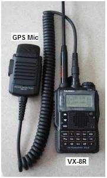
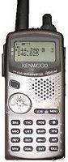
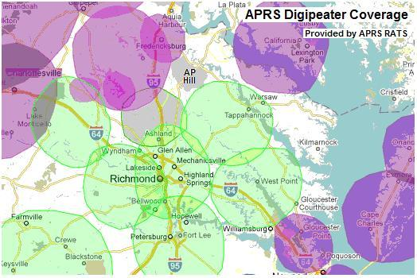
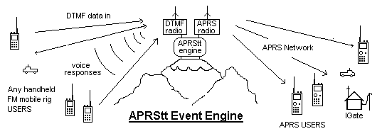
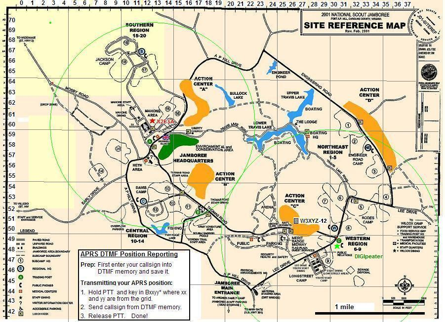

  2010 Jamboree is Over! Its now time to prepare for 2013 at the new location in South Eastern West Virginia. See map. and see our new planning page for 2013.
APRS Communications Planning for Jamboree 2010!
Bring your APRS HT, or, if you don't have one,
bring any HT with DTMF memory!. It can be tracked too!
Not only can APRS help you find each other and track your troops movements for display back home, but also your APRS HT can be used for sending back messages and email for scouts to show the value of ham radio in the field. APRS is ideal for field use since it helps everyone maintain tactical situational awareness locally while also providing global connectivity for messaging. You don't even need to bother with a GPS. Just manually enter your position using the GRIDDED map that everyone at Jamboree will have shown below. Just change the last 2 digits in your lat/long as you move about camp and everyone will see you.
You can also use ANY HT with a DTMF keypad to enter your position using those same four digits.
APRS Coverage at Jamboree 2010:
The APRS network can provide coverage not only in your travels across country
to and from Jamboree, but also down to your campsite.
Simply click on this
Last 3 hours Live Jamboree APRS map
to see all APRS activity in and around the Jamboree at AP Hill.
The existing coverage of permanent digipeaters is shown to the right and was
augmented by on-site digipeaters to provide coverage to HT's everywhere.
As of April 2010, there was also a new IGate/digi in Fredricksburg
closer to AP hill.
See this plot of NI4VA-5 digi on the
NW corner of the AP hill site.

Stephen Shearer, WB3LGC and Ed Dudley put together this list of potential APRS volunteers to help make this happen. See this Google Earth View of the K2BSA location and a view of the K2BSA tent.
Use your DTMF HT for APRS at Jamboree 2010! We hope that everyone with an HT can participate in APRS, not just those with the special APRS hardware, because there will be an APRStt (Touchtone) gateway there that lets these users also send their position and status into the APRS system at the event. APRStt is just a gateway centrally located and running APRSspeak software on a laptop with two radios as shown to the right. It acts as a gateway between the DTMF users on 146.58 and the rest of the APRS users on the APRS channel (144.39). It receives DTMF data and responds with Voice Reports from APRS. When the new APRSspeak software is ready for release, you can get it here.
 SENDING YOUR POSITION BY DTMF: To send your position first you have to program a DTMF memory in your HT with your DTMF text equivalent callsign using the format of AxxxxxxxxxxVK# using the two-key method. David, K3PO wrote a simple Callsign Translator to help you enter your call into your DTMF memory. Once that is done one time, then all you have to do to report your position is 3 steps:
FREQUENCY: You can also add text to your position. Probably the most valuable information on your position is to show what voice frequency you are monitoring. To transmit your Frequency, just use the format CFFFFFF* which is the frequency in KHz, again, followed by your callsign from memory.

The above map above is the official Jamboree map that everyone at the Jamboree with always have with them. To make it useful for APRS, we have replaced the A-Z latitude grid on the left hand edge with numbers 42 through 66 so that we can use keypad digits instead of numbers. Anyone with this map can report their position using the xx/yy grid and will show on all APRS maps and the global APRS system. Notice all grid numbers will be between 1000 and 3770.
If you look carefully, you can see an APRStt user W3XYZ-12 in the yellow ACTION CENTER-3. All APRStt users will show with a -12 SSID on their callsign and will have the APRStt keypad symbol so that they can be distinguished from normal APRS users who will also show on the same map.
Precise Position Reporting with DTMF: Of course, if you have a GPS, then you know your position to better accuracy. You can report that better position also using your DTMF HT by using the format of B3xxxyyy* where xxx and yyy are the minutes of latitude and longitude in 38 deg 0Y.YYN and 77 deg ?X.XXW.
For more info on APRStt, see the APRStt web page
USING UI-View: To run this map on UI-view download the map file and the INF file below and save them in your MAPS folder below where UI-View is installed.
Keith, VE7GDH provides notes for anyone that knows how to convert from a JPG to BMP to instead use the map as an underlay if they are using PMapServer.
Applications of APRS at Jamboree: Remember, APRS is just another tool in the ham radio operators tool bag. It is not an end in itself. So how APRS will be used at Jamboree will depend on the amateur radio operators that will be there and are part of the organization. We are only providing the tool. Think outside the box how we can use position reporting or any othere numeric data from HT's during jamboree.
Best Location? Bobby Lacey KF4GTA*contesting.com h as provided a Google Terrain map that shows the Jamboree site has no real high points, but does have several shallow valleys. Looking at the Terrain, my guess would be the best spot for a centeral digipeater, APRStt or voice repeater would be in the area of action center B becuause it has valleys on both sides in the directinos of the other activity areas so would have less loss through the trees... maybe.
Bob, WB4APR
APRStt BACKGROUND:
We first demonstrated the APRStt concept back in 2001 at Dayton using hardware DTMF decoders and a parallel port voice synthesizer, It was again demonstrated in 2009 by Rick Ruhl W4PC. But now finally in 2010, we have a working version demonstrated at Dayton by KA2UPW, Doug that is called APRSspeak. It runs on a PC with nothing but a pair of radios, and this establishes a local APRStt zone where any nearby HT that ID's itself by DTMF memory will be converted to APRS at that location. or they can enter their position data too.
THINKING OUTSIDE THE APRS TRACKING BOX:
Everyone has heard me say over and over that APRS is not a tracking system, but is a common local/global information exchange and distribution system for tactical and real time data of immediate communincations support value to users. To appreciate the potential of APRStt, you have got to forget about APRS as a tracking system, and think about what kinds of simple digital data can be exchanged in support of an event or local activity. Here are several DATA items that can easily be sent by DTMF::
VOICED INFORMATION: Even without using DTMF or inputing any data, anyone can tune into the APRStt (or APRSspeak) voice channel and hear unsolicited information of local significance. Positions are reported as a direction and range from a reference point (usually the APRStt engine). For example "WB4APR is 4.5 miles northeast". Of course APRStt users can change the reference point by DTMF command such as "from the repeater" or "from downtown" or "from FINISH", etc. For example, here are some of the unsolicited reports that were implemented in APRStt1.0 back in 2001:
For example, the callsign WB4APR in DTMF is spelled as A9A2B42A7A7C71#. That one callsign-burst when received by the APRStt receiver and forwarded into the APRS system yields all of the following important information:
APRStt VOICE RESPONSE: The feedback from APRStt to DTMF users is all by synthesized voice. The APRStt acknowledges a properly decoded DTMF checkin with "Welcome CCCC". APRS messages to a DTMF user are spoken. APRS positions when spoken over APRStt are always spoken as a DIRECTION and DISTANCE from a local REFERENCE. By defualt, the local reference is the location of the APRStt engine itself, but this reference can be changed by the DTMF user to any other APRS location in the system. DIRECTION is spoken as the 16 cardinal points of the compass as in North, NorthNortheast, Northeast, EastNorthEast, East, etc. This verbal positioning lets everyone in the club or at an event participate in the exchange of APRS data, not just those with the APRS radios. Even the old codger that shows up with his venerable 20 year old HT can participate!
 APRStt IS SIMPLE! All you need is two radios and a laptop running the
APRStt software (APRSspeak) and then it serves as the gateway between the DTMF users and the
rest of the APRS system as shown to the right.
It lets 100% of ham radio users "check-in"
on APRS to facilitate end-to-end contact between operators, not just
the 5% that show up with APRS walkie-talkies.
APRStt IS SIMPLE! All you need is two radios and a laptop running the
APRStt software (APRSspeak) and then it serves as the gateway between the DTMF users and the
rest of the APRS system as shown to the right.
It lets 100% of ham radio users "check-in"
on APRS to facilitate end-to-end contact between operators, not just
the 5% that show up with APRS walkie-talkies.
APRStt responds! On hearing the DTMF callsign and sending out the position and frequency packet on the APRS channel, the more advanced APRStt implementations will respond by voice with "Welcome W3XYZ!" as confirmation. This is really no different than what mobiles do now "WB4APR LIstening", except that using the DTMF method is machine readable and allows this presence to the global ham radio community via APRS instead of falling on deaf ears.
APRStt two-way: Now then, these same more sophisticated APRStt systems can also watch the APRS system for any messages addressed to you. Hearing any, they will SPEAK them back to you on the voice channel! The specialized full two-way APRStt Engine can be as simple as a laptop at any repeater site or located in the valley at a home station as shown below.
APRStt is the gateway for DTMF voice users to report themselves to the global APRS community of users. It enables all non-APRS HT's and Mobile radios to be located and this information is fundamental to facilitating ham radio communications. See some examples:
Bob, WB4APR
{kind=link}
{kind=link}
{kind=link}
{kind=link}